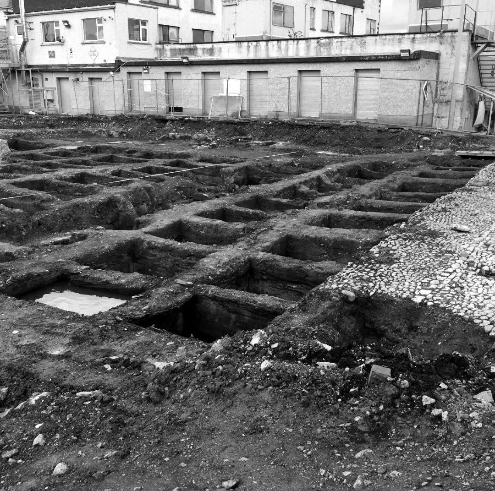

Stop 12 of 18 · Clanbrassil Street and Warrenmount
Blackpitts
Tanners’ pits, mill streams and a river that marked a boundary.
Through the Liberties
North of the Grand Canal, the culverted river runs along Clanbrassil Street, past Donore Avenue, Warrenmount and Blackpitts. Blackpitts, a name on maps by 1728, probably comes from the pits used by tanners along the river, and Mill Street, first mentioned in 1711, recalls a double mill for oil and flour that is linked to St Thomas’s Abbey. In 1830 the street had several tanners and a fancy weaver; by 1880 it had five tanners and a parchment maker. During a great fire on 22 June 1875, burning whiskey ran into the Poddle beneath Ardee Street and set the river alight. One account of the area, on the Hidden Dublin website, describes a man-made side channel at Blackpitts that came from the direction of Ardee Street, turned east along Sweeney’s Lane and then north to join the main river; it was photographed in 2007, on a site then about to be built over. Faddle Alley, a lane off Blackpitts, is where the blind street rhymer Michael Moran, known as Zozimus, was born in about 1794. He died in lodgings on Patrick Street, also on the river’s course, in 1846.
Near New Row it picks up its ancient course again, and at the junction of New Street, Patrick Street and Kevin Street, the old Cross Poddle (renamed Dean Street by the Wide Streets Commissioners in 1826), a medieval mill stood on its bank beside St Nicholas’ Bridge, outside St Nicholas’ Gate. At Fumbally Lane it is joined by the Tenter Water, a branch of the City Watercourse, and at the corner of the Coombe and Patrick Street by its one real tributary, the Commons Water, which rises in Crumlin.
The Blackpitts tanners
Cross Poddle was much older than its mill. In the Middle Ages it was the lowest point at which the Poddle could be forded, so several important roads met there, with a gate outside the city walls and a market. The area may already have been settled before the Normans came, with several early churches and possibly an Irish suburb of the Norse town.
Just upstream, the river gave Blackpitts its trade. In 2004 archaeologists excavating at 48 New Street South found more than a hundred tanning pits, dating from the late 13th century to the 17th. The archaeologist Antoine Giacometti argues that this was not one big tannery but a quarter of small household tanyards, worked behind the houses on New Street. Tanners needed a steady supply of water to soak and rinse hides, and late medieval records show ditches being dug off the Poddle to serve the tanneries. From the 15th century, laws often ordered those ditches filled in, because the Poddle kept flooding and the tanners were fouling the water.
The site ran along the top of a steep slope down into the Poddle valley. A ditch dug along it in the 13th or 14th century ran into or out of the river near a medieval millpond, which was excavated just north-west of the site. The millpond was dug in the 13th or 14th century and filled in during the 14th or 15th, the same dates as the ditch, which may have been its tail race or overflow. Giacometti suggests both were part of the great programme of works in the mid-13th century, when the river was diverted round the Liberties and mills and water channels were set along its old and new courses, marking the edges of the church lands. Disputes over those mills and watercourses fill the medieval records.


Donore Avenue, 1901
Donore Avenue was once Love Lane, and the Poddle ran open beside it. Dublin Corporation’s printed reports for 1901 (Report No. 129 of the Paving Committee, pages 301 to 316) tell the story of how it came to be covered.
In 1894 an architect, Robert Stirling, laid out new roads on the Huband estate off the South Circular Road, reached through Love Lane. The Borough Surveyor, Spencer Harty, agreed to narrower roads on condition that a stretch of the Poddle he marked “A” was covered over: “this will be a great improvement.” The Corporation approved this in 1896, but the new road was never built, so the river was never covered.
By 1900 the residents had had enough. A petition forwarded by the Rev. Fergus Greer, rector of St Catherine’s, and signed by the Greenmount Spinning Company and “a great many others” pointed out “the great danger and nuisance the Poddle River is to the public, when it is exposed to the open, adjoining the street, now known as Donore Avenue, formerly Love Lane.” The lane was “only 10 feet wide alongside the river”, wide enough for one vehicle at a time, and there was “the added danger to children from the narrow thoroughfare and the open river, especially now when it is contemplated building a parish school alongside the river.”
Harty reported that covering about 320 feet of the river would give a road 25 feet wide with two 6-foot footpaths, for about £1,850. The Huband estate’s new agent refused to pay for its share, and the Law Agent advised that if the river was to be covered, the Corporation was the proper authority to do it. On 31 July 1901 the Paving Committee agreed the work “would be an improvement”, but “considering the pressing demand on the funds of the Corporation at this present time”, it would not recommend spending £1,850. The Corporation’s index shows a loan of £1,850 for covering the Poddle at Donore Avenue the following year, so the work went ahead in 1902.
Today, according to McEntee and Corcoran, the old course is blocked off outside Donore Avenue church and a newer culvert carries the flow along Donore Avenue, rejoining the old route between Ebenezer Terrace and Harman Street before it reaches the old mill pond at Warrenmount.
A boundary on the river
St Kevin’s National School for boys, built in 1894 and 1895 and opened on 20 April 1895, faces onto Blackpitts. Its site follows the old course of the Poddle, which was also an old boundary: on one side the lands of St Thomas’s Abbey, later the Earl of Meath’s Liberty, and on the other those of St Patrick’s Cathedral, later the Liberty of St Sepulchre.
The lanes off Blackpitts have their own stories. Dowker’s Lane was once Tucker’s Lane. Warrenmount is named after Nathaniel Warren, Lord Mayor in 1782 and an MP for the city, who was rumoured to be a partner in “The Sham”, a notorious gambling house. Fumbally Lane had Barnatt’s food stores in an old brewery building, where fire broke out on the morning of 15 September 1906; the brigade had it out within an hour.
Washing rights in the Poddle
Much of the housing around Blackpitts was built in the 1880s by Arthur Hammond, a Catholic builder. His daughter, Mary Agnes Hammond, inherited 150 houses in 1902; she is remembered as a British spy during and after the First World War. Many of her tenants worked at the Guinness brewery, and the deeds of her houses carried an unusual right: to wash in the River Poddle, long after it had gone underground. She never married and died in Switzerland in 1956. Her estate of 26 terraced houses in Blackpitts, Emerald Square and Dolphin’s Barn was still largely together when it was sold in the 1980s.
Poddle People
- Lord Iveagh (Edward Cecil Guinness): Rebuilt the Poddle valley
- Mary Agnes Hammond: Landlady with washing rights in the Poddle
- Zozimus (Michael Moran): The blind rhymer of the Liberties
- Spencer Harty: The engineer who found St Patrick’s Well
Parts of this page draw on research by the volunteers of the Crumlin and Walkinstown History Group, shared with poddle.ie. About their research.